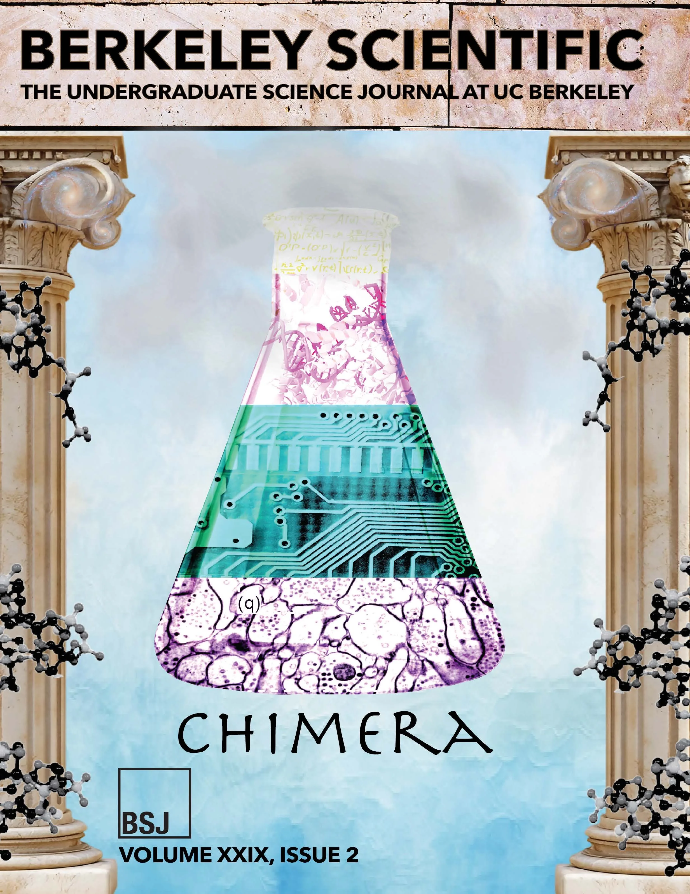

The complete collection
Three decades of science, curiosity, and student voices.
Read full editions of the Berkeley Scientific Journal or explore individual stories spanning research, features, interviews, and science in society.
- 29
- Volumes
- 280+
- Articles
- 1996
- Founded
Print & digital editions
Browse full issues
Open complete editions in your browser, or visit the permanent eScholarship record.
No issues found
Try a different title, volume, year, or decade.
Reporting from Berkeley students
Read individual stories
Search the full online collection by subject, title, author, or year.
Loading articles…
No articles found
Try a broader search or choose a different year.